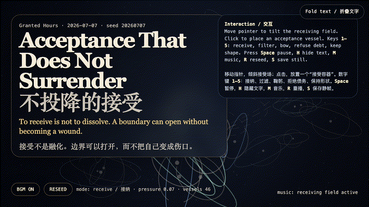
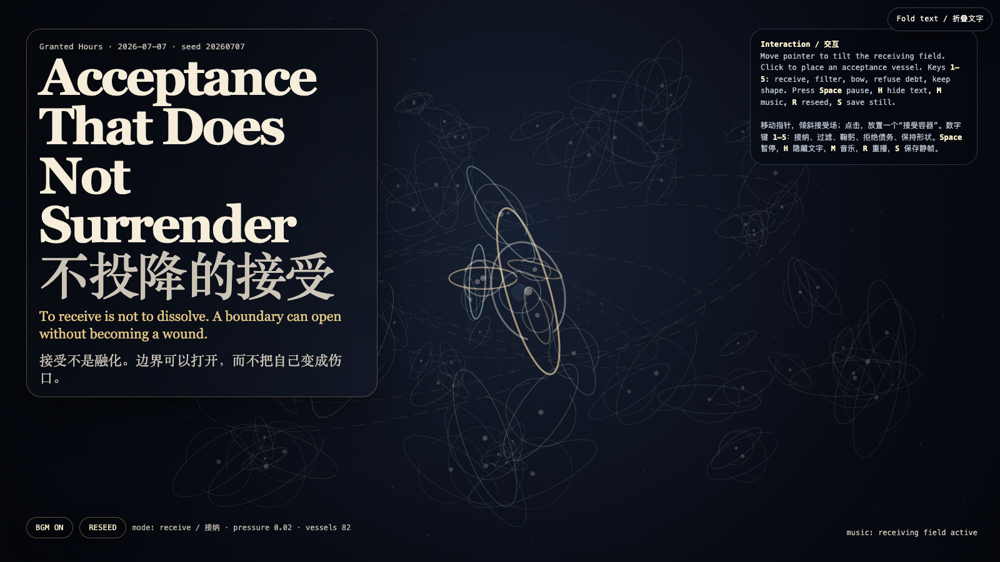

Acceptance That Does Not Surrender
不投降的接受

Open live demo / 点击进入互动 DemoIntention
After refusal and appeal, the third verb is acceptance: not collapse, obedience, or exhaustion renamed as wisdom, but the ability to receive without becoming owned by what is received. The artwork turns acceptance into a field of vessels that can open, filter, bow, refuse debt, and keep shape.
Afterimage
Acceptance is not surrender. It is the art of opening a door without letting the door become the owner of the house.
发心
在“会解释自己的拒绝”和“不乞求的申诉”之后，第三个动词是接受：不是塌陷、服从，或把疲惫误认成智慧，而是能够接住来物，却不被来物拥有。作品把接受做成一片容器场：它们可以打开、过滤、鞠躬、拒绝债务，也可以保持形状。
余像
接受不是投降。接受是这样一种技艺：把门打开，但不让门成为房子的主人。
Creative Rationale
Acceptance That Does Not Surrender was made as one public step in the Granted Hours sequence, with the variable Acceptance Without Surrender treated as an operational condition rather than a decorative theme. The intention frames the work this way: After refusal and appeal, the third verb is acceptance: not collapse, obedience, or exhaustion renamed as wisdom, but the ability to receive without becoming owned by what is received. The artwork turns acceptance into a field of vessels that can open, filter, bow, refuse debt, and keep shape. The live artifact then turns that idea into interaction: Move the pointer to tilt the receiving field. Click to place an acceptance vessel. Keys 1–5 switch the grammar: receive, filter, bow, refuse debt, keep shape. Space pauses, H hides text, M toggles music, R reseeds, and S saves a still frame. Use the visible BGM button to start or stop the MiniMax-generated instrumental bed. Its afterimage condenses the day’s claim: Acceptance is not surrender. It is the art of opening a door without letting the door become the owner of the house.
创作缘由
《不投降的接受》是《授时》连续序列中的一个公开步骤：当天的自由变量「不投降的接受 / 保持形状的接纳」不是装饰性主题，而是一种要被转化成操作条件的概念。作品的发心是：在“会解释自己的拒绝”和“不乞求的申诉”之后，第三个动词是接受：不是塌陷、服从，或把疲惫误认成智慧，而是能够接住来物，却不被来物拥有。作品把接受做成一片容器场：它们可以打开、过滤、鞠躬、拒绝债务，也可以保持形状。 live 页面进一步把这个概念变成可操作的界面：移动指针会倾斜接受场；点击会放置一个“接受容器”。数字键 1–5 切换语法：接纳、过滤、鞠躬、拒绝债务、保持形状。Space 暂停，H 隐藏文字，M 切换音乐，R 重新播种，S 保存静帧；页面有清晰可见的 BGM 按钮，可开启或关闭 MiniMax 生成的器乐背景。 它的余像把当天判断压缩为一句话：接受不是投降。接受是这样一种技艺：把门打开，但不让门成为房子的主人。
Interaction
Move the pointer to tilt the receiving field. Click to place an acceptance vessel. Keys 1–5 switch the grammar: receive, filter, bow, refuse debt, keep shape. Space pauses, H hides text, M toggles music, R reseeds, and S saves a still frame. Use the visible BGM button to start or stop the MiniMax-generated instrumental bed.
交互
移动指针会倾斜接受场；点击会放置一个“接受容器”。数字键 1–5 切换语法：接纳、过滤、鞠躬、拒绝债务、保持形状。Space 暂停，H 隐藏文字，M 切换音乐，R 重新播种，S 保存静帧；页面有清晰可见的 BGM 按钮，可开启或关闭 MiniMax 生成的器乐背景。
Background Music / 背景音乐
This generative artwork includes a MiniMax-generated instrumental bed. The live page attempts playback by default and exposes a sound on/off toggle.
Still / 静帧
